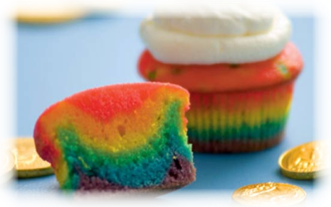
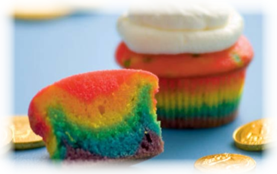

There are all different kinds of cupcakes red velvet, chocolate, vanilla, and more. I am going to teach you how to make a rainbow cupcake. So let's get started!
INGREDIENTS:
White cake mix (we used an 18¼-ounce box)
Food coloring (red, blue, green, and yellow)
Cupcake cases
Whipped cream (optional)
Food coloring amounts:
Purple = 9 red and 6 blue drops
Blue = 12 drops blue
Green = 12 drops green
Yellow = 12 drops yellow
Orange = 12 yellow and 4 red drops
Red = 18 drops red
Method:
- Prepare your favorite white cake mix, then divide the batter evenly among six small bowls.
- Dye each bowl of batter a rainbow color (with specific amounts of food coloring drops).
- Line 16 a muffin tray with cupcake cases.
- Evenly distribute the purple batter among the cups, then the blue, and so on, following the order shown. As you go, gently spread each layer of batter with the back of a spoon to cover the color underneath.
- Bake the cupcakes according to your recipe directions. Before serving, remove the paper wrapping, and if you like, top each cupcake with a whipped-cream cloud.

CUPCAKES!!!
